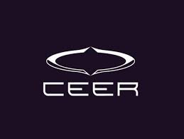

FORVIA
CEER : EV Prototype build
Riyadh, Saudi Arabia
A global project leader driving operational excellence through cross-functional leadership and high-impact stakeholder engagement. From my mechanical engineering roots to a Cornell Masters in Engineering Management, I leverage global experience to help teams navigate the journey from initial idea to final outcome.
Overview of my roles in industry, leadership, and engineering projects.
Riyadh, Saudi Arabia

Pune, India


Showcase of my work in product development, strategic operations, and data-driven project leadership.
I am a lifelong advocate for education and a believer in the power of teamwork. When I'm not working, you can find me on the volleyball court, playing the harmonium, exploring my thoughts through writing or out in nature.
I’m currently based in Ithaca, New York. I’d love to hear from you regarding opportunities or professional networking.
As part of the Industry 4.0 goals and cost-reduction initiative, the organization lacked real-time visibility into equipment utilization across 63 global plants. Without unified data on machine performance and capacity, capital planning decisions relied on incomplete information. To address this, a comprehensive Manufacturing Execution System (MES) was required, specifically, the CAPLA (Capacity Planning) platform, to integrate global equipment performance with acquisition decisions by establishing a single source of truth for machine data across all plants and which needed accurate data to function.
Led end-to-end digital transformation to operationalize CAPLA by synchronizing 1,800 industrial assets between SAP and Palantir. The tools that were used were: Power BI, Palantir, SAP MII, DMC.
Action area 1: Led Data correction Foundation & Optimization:
Three Critical Root causes identified:
Action area 2 : Training & Platform Development:
Winning the business requires a competitive quote with accurate manufacturing costs, operational feasibility and it needs to be backed by comprehensive industrial planning and cost estimation to ensure profitability and operational viability. Parallelly, I was supporting acquisitions.
SITUATION : At L&T Heavy Engineering, Tube sheets are mission-critical circular steel plates used in heat exchangers and reactors to join and support hundreds of tubes. First, the tubesheet is welded (plate sections are joined by long seam welding to form a circular assembly), then later the holes are precisely drilled. The challenge is : During long seam welding, the thermal expansion and contraction cycles create unavoidable angular distortion and warping. The final flatness and dimensional accuracy of the tubesheet directly determine whether the 1000+ precision-drilled holes will be within tolerance when drilling occurs or the tube sheet will be scrapped.
Manufacturing had traditionally relied on a reactive, hunt-and-correct approach: weld continuously, measure distortion, apply straightening repeatedly until flatness was achieved.
This reactive approach created few critical risks:
Need : A predictive turning schedule, flipping the plate at scientifically-determined weld deposition percentages prevent distortion accumulation during welding itself.
SITUATION : After long seam welding, tubesheets require weld overlay (cladding) on inner surfaces to enhance corrosion resistance and mechanical properties for harsh operating environments. Electroslag Strip Welding (ESSW) overlay process induced secondary distortion patterns that compromised flatness tolerance. Critical flatness specifications had to be maintained throughout the overlay process to prevent downstream manufacturing issues (tube-to-tube sheet joint alignment). Manufacturing needed to identify a solid threshold for the welding thickness and turns.
Summary of what we saved:
SITUATION : During pressure vessel fabrication at L&T Heavy Engineering, large assemblies (150T+) required precise positioning and movement within the workshop. Standard overhead cranes could lift the pressure vessel, but positioning the hydraulic jack below it presented a critical constraint. Because the pressure vessel was lifted by the overhead crane, it blocked access to the hydraulic jack by another crane. A custom roller solution was needed that could support the full weight of the hydraulic jack to enable smooth lateral displacement to position correctly for the pressure vessel to be placed on it, problem requiring structural design under load.
Delivered a transformational manufacturing framework for pressure vessel tube sheet production at L&T Heavy Engineering, shifting from reactive, costly post-weld correction to predictive, in-process distortion control. Demonstrated ability to solve real-world production constraints through applied physics and systematic problem-solving.
CEER, Saudi Arabia's first homegrown EV brand, required 63 complete prototype vehicles assembled at their Riyadh facility for Phase 1 testing within 80 days. Forvia was the official interior parts supplier (Instrument Panel, Centre Console, Door Panels) feeding a Just-In-Time production line, a zero-buffer environment where delays directly halt vehicle assembly. The execution complexity spanned multiple geographies (China manufacturing and supply chain, Riyadh production), $2M active inventory, and shared component dependencies with competing on-site suppliers, requiring orchestrated supply chain management.
Citron vehicle lift-off (2022-2023) was critical for Stellantis. Interior component design required flawless execution on a compressed timeline; any delays would jeopardize the manufacturing schedule.
Engineering Change Requests (ECRs) are continuously triggered by customer feedback, field defects, manufacturing bottlenecks, and material nonconformances. Each requires rapid assessment, design updates, and production validation within tight timelines to prevent field failures. Managing this high-velocity change workflow demands disciplined execution.
A retail transaction dataset with 698 customers across 3,846 unique products required analysis to uncover customer purchasing patterns and market basket insights. The goal was to segment customers based on their buying behavior to inform merchandising strategies, product bundling opportunities, and targeted cross-selling campaigns.
As a team, we applied three complementary market basket analysis algorithms to the retail transaction dataset:
R (K-cluster, apriori algorithm), Python, Data Visualization
Cornell students lacked affordable late-night dining options, while dining halls faced significant food waste from unserved surplus. Our team was tasked with conceptualizing a solution and delivering a comprehensive, execution-ready project plan for Big Red Bites, a mobile platform to monetize surplus food while driving campus sustainability.
As the Project Manager for a 14-member cross-functional team (including 4 distance learners), I was responsible for leading the end-to-end strategic planning phase. This included defining the technical architecture, financial viability, and a 7-month phased execution roadmap to pitch to stakeholders.
I established a structured planning environment to move the project from a concept to a "shovel-ready" state:
For the course of Decision Framing & Analytics, our team constructed a problem statement in which a mid-sized FMCG firm sought to enter the competitive U.S. plant-based protein bar market, a sector valued approx. at $1.05 billion and growing at a 17.8% CAGR. This market in reality featured a high failure rate for new entrants due to saturated competition and complex consumer preferences regarding taste and "clean label" claims.
Our team was tasked with delivering a robust, data-led market entry strategy. The objective was to define a product-market fit, establish a pricing architecture, and select the optimal distribution channel through rigorous decision analytics.
The team integrated distinct analytical frameworks to drive the recommendation:
CRDF (learn more) project of designing and developing a 6 DOF robotic required an environment where the simulations could be carried out and tested. It also demanded both hands-on technical implementation and coordination in the team execution with weekly delivery milestones.
DriveBuddyAI (learn more), an AI-powered telematics and fleet safety platform, was constructing and testing various intelligent monitoring solutions for the commercial vehicle fleets. The system, among many other modules, required a pipeline that captured real-time video and storage mechanism for highways and road footage that could seamlessly convert and replay data as continuous video streams, a critical component for collision avoidance training, risk assessment in the transportation domain.
As a member of the Social Welfare & Development (SW&D) Committee at VIT (learn more), I was part of the team preparing to launch "Prayatnam," a flagship educational initiative supporting 30+ differently-abled children at Jeevan Dhara Vidyalaya. Days before the program was scheduled to begin, the designated Team Lead had to withdraw due to a personal emergency. Because other senior members were already fully committed to parallel flagship events like Atmabodh, the project faced an immediate leadership vacuum and the risk of cancellation before it even started.
I proactively decided to step up as the primary Team Lead and assumed responsibility for the project’s success, with the immediate goal of building an operational structure to ensure the program launched and was completed on schedule.
In coordination to the senior members of the committee, I implemented a management framework to organize the 3-month initiative: